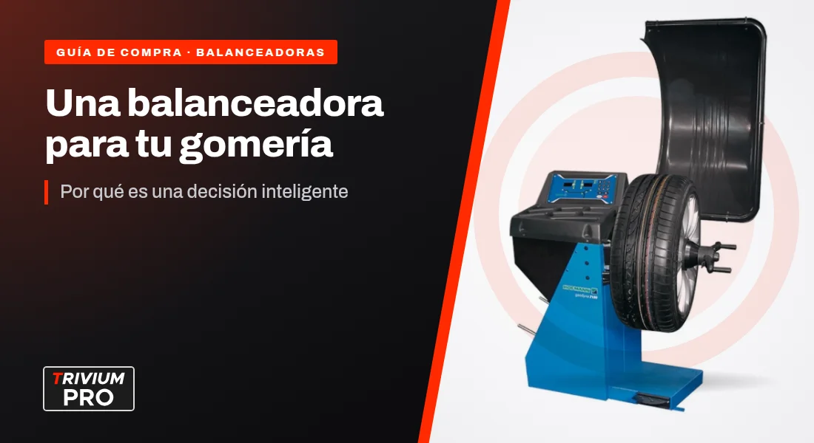

Elevadores
Elevadores Alineadoras
Alineadoras Balanceadoras
Balanceadoras Desarmadoras
Desarmadoras
Para muchas gomerías en crecimiento, la desarmadora de neumáticos es la primera máquina que adquieren debido a su funcionalidad esencial. Sin embargo, con el tiempo, surge la necesidad de expandir los servicios y optimizar la eficiencia del taller. Es en este punto donde la balanceadora de ruedas entra en juego. En este artículo, te contamos por qué es una inversión clave y cómo puede transformar la operación de tu gomería.
1. Mayor Profesionalismo y Servicios Complejos
Una gomería que solo cuenta con una desarmadora de ruedas puede ofrecer el servicio básico de montaje y desmontaje de neumáticos. Pero, para ser competitivos en el mercado actual, los clientes buscan algo más que el servicio básico: buscan una atención completa, y parte de eso es asegurarse de que las ruedas estén perfectamente balanceadas después de cada intervención.
La adquisición de una balanceadora de ruedas te permite ofrecer un servicio completo de alineación y balanceo, lo que añade valor a tu gomería y te posiciona como un taller más profesional y especializado.
2. Mejora la Satisfacción del Cliente
El balanceo de ruedas es un proceso crucial para evitar vibraciones, desgaste irregular de los neumáticos y un manejo inestable del vehículo. Con una balanceadora, puedes garantizar que los neumáticos giren de manera equilibrada y suave, lo que mejora el rendimiento del auto y, sobre todo, la experiencia de conducción del cliente.
Un cliente que sale de tu gomería con un vehículo que funciona sin problemas no solo es más probable que regrese, sino que también te recomendará a otras personas. La satisfacción y seguridad del cliente aumenta, y esto se traduce en confianza y fidelidad.
3. Ahorro de Tiempo y Mayor Eficiencia
Una balanceadora de ruedas no solo mejora el servicio, sino que también optimiza el tiempo de trabajo en tu taller. Sin una balanceadora, tendrías que subcontratar este servicio a otro taller o sugerirle al cliente que lo haga por su cuenta, lo que lleva a una pérdida de tiempo para ambos.
Con la balanceadora en tu gomería, puedes manejar el proceso de principio a fin. Esto no solo reduce el tiempo de espera del cliente, sino que también aumenta tu eficiencia operativa, permitiendo atender más vehículos en menos tiempo.
4. Aumento de Ingresos
Ofrecer el servicio de balanceo de ruedas no solo es conveniente para el cliente, sino que también te abre una nueva línea de ingresos. Puedes cobrar por el servicio de balanceo como parte de un paquete o como un servicio adicional, lo que ayuda a aumentar el ticket promedio de cada cliente que entra a tu taller.
Además, una gomería que ofrece balanceo y alineación es más atractiva para los clientes que buscan soluciones completas. Al atraer más clientes y ofrecer más servicios, tus ingresos crecerán de manera proporcional.
5. Longevidad de los Neumáticos y Menor Desgaste
Los neumáticos mal balanceados se desgastan de manera irregular, lo que reduce su vida útil y afecta el manejo del vehículo. Al ofrecer el balanceo de las ruedas como parte de tu servicio estándar, ayudas a que los neumáticos de tus clientes duren más tiempo, mejorando la seguridad y reduciendo costos futuros. Esto también podría motivar a los clientes a realizar un mantenimiento regular en tu gomería, manteniéndote como su primera opción.
6. Ventaja Competitiva en el Mercado
Muchas gomerías de pequeño tamaño o recién establecidas se enfocan en lo básico, sin contar con balanceadoras ni ofrecer servicios avanzados. Al contar con una balanceadora de ruedas, te destacas de la competencia y posicionas tu gomería como un taller integral.
Esta ventaja competitiva te permitirá captar más clientes y aumentar la frecuencia de visitas, ya que podrán realizar el mantenimiento completo de sus neumáticos en un solo lugar.
7. Facilidad de Uso y Retorno de Inversión
Las balanceadoras de ruedas modernas están diseñadas para ser fáciles de usar. Con un poco de capacitación, tu equipo podrá operar la máquina de manera eficiente. Además, el costo de la inversión inicial puede recuperarse rápidamente al ofrecer este servicio adicional y atraer nuevos clientes.
El retorno de inversión (ROI) de una balanceadora de ruedas puede verse reflejado en pocos meses, dependiendo del volumen de clientes y la demanda del servicio.
Conclusión
La incorporación de una balanceadora de ruedas en tu gomería es una inversión que no solo mejora la calidad de los servicios que ofreces, sino que también aumenta tus ingresos, optimiza la eficiencia operativa y mejora la satisfacción del cliente. No importa si tu taller está empezando con una sola desarmadora de neumáticos, una balanceadora es el siguiente paso lógico para expandir tu negocio y ofrecer un servicio más completo y profesional.
¿Estás listo para llevar tu gomería al siguiente nivel?